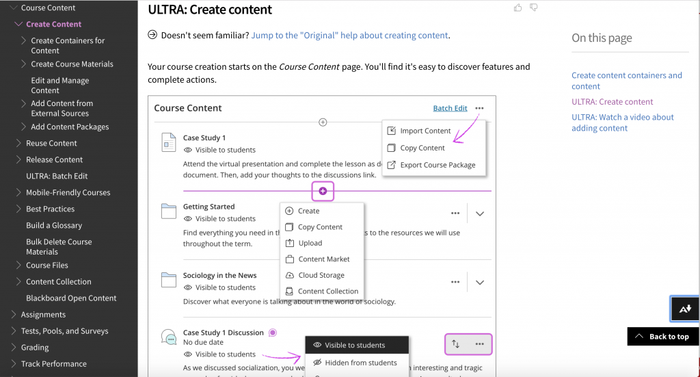

12.7 Passo Cinco: Dominar a tecnologia



Dedicar tempo para obter formação adequada na utilização das tecnologias de aprendizagem padrão da instituição poupará tempo a longo prazo e viabilizará a concretização de objetivos pedagógicos mais amplos do que os inicialmente previstos.
12.7.1 O crescimento exponencial das tecnologias de aprendizagem
Disponibilizam-se hoje diversas tecnologias para utilização educativa:
- sistemas de gestão de aprendizagem (SGA/LMS), como Blackboard Learn, Moodle, D2L, Canvas;
- ferramentas síncronas de comunicação, tais como Blackboard Collaborate, Adobe Connect, Big Blue Button, ZOOM, GoToMeeting e Microsoft Teams;
- sistemas de gravação e captação letiva (ex.: GarageBand ou Audacity para podcasts e Echo360 para captação de aulas expositivas);
- tablets e dispositivos móveis, como iPads e smartphones, associados às respectivas aplicações letivas;
- os MOOCs e as suas variantes (SPOCs, TOOCs, etc.);
- ferramentas de mídias sociais, incluindo plataformas de publicação como o WordPress, wikis como o MediaWiki, Google Hangouts, Google Docs e Twitter;
- ferramentas de autoria do aprendiz, tais como portfólios eletrônicos (ex.: Mahara);
- motores de pesquisa e ferramentas de tradução digital (ex.: Google Search e Google Translate).
Não se exige a utilização da totalidade ou de ferramentas específicas desta listagem, contudo, caso opte pela sua integração, torna-se necessário dominar a sua operação técnica a par do conhecimento das suas potencialidades e limites pedagógicos (ver Capítulos 7, 8 e 9). Embora as ferramentas digitais evoluam, os princípios gerais mantêm-se aplicáveis às novas tecnologias que venham a surgir.
12.7.2 Utilizar a infraestrutura tecnológica disponível na instituição
Caso a instituição disponibilize um sistema de gestão de aprendizagem (SGA/LMS) institucional como o Blackboard Learn, Moodle, Canvas ou D2L, utilize-o. Evite debates sobre qual constitui a ferramenta ideal. Sob a perspectiva funcional, as diferenças entre as principais plataformas são residuais. O utilizador pode manifestar preferência pessoal pelo design de uma interface específica, contudo esta preferência é secundária face ao esforço operacional de adotar um software que careça de suporte técnico da instituição. Os LMS não são perfeitos, contudo evoluíram ao longo de duas décadas e apresentam-se simples de operar por docentes e, sobretudo, por estudantes. Estruturam um ambiente organizado para o ensino digital e contam com suporte técnico dedicado. A flexibilidade do LMS viabiliza diferentes abordagens pedagógicas. Recomenda-se a frequência de ações de formação específicas na ferramenta; breves sessões formativas previnem horas de esforço na configuração individual do sistema.
Uma reflexão prévia prende-se com a real necessidade de adotar um LMS. Contudo, esta opção só deve ser considerada caso a instituição dê suporte técnico a plataformas alternativas, como WordPress ou Google Docs, sob risco de o docente despender tempo excessivo na gestão de problemas técnicos básicos.
O mesmo pressuposto aplica-se às ferramentas de conferência síncrona como Blackboard Collaborate, Adobe Connect, Big Blue Button ou ZOOM. A preferência por um software específico é secundária face às metodologias sob as quais as ferramentas são aplicadas. Trata-se de decisões de pendor pedagógico; centre a sua reflexão nas opções metodológicas face à busca pela tecnologia ideal.
Pondere criteriosamente a articulação entre ferramentas síncronas e assíncronas no ambiente digital. As ferramentas síncronas revelam-se úteis para reunir a turma num momento comum, contudo tendem a favorecer dinâmicas centradas no professor (exposição e controle de turnos de fala) e exigem disponibilidade horária rígida dos alunos. Contudo, o professor pode estimular equipes de projeto a utilizarem ferramentas síncronas (como ZOOM, com divisão em salas temáticas de apoio) para distribuir tarefas, debater temas ou finalizar relatórios acadêmicos. Em contrapartida, as ferramentas assíncronas do LMS asseguram maior flexibilidade horária face ao síncrono e estimulam o estudo autônomo do aluno (competência de relevância na era digital). Naturalmente, ambas as modalidades podem ser associadas de forma complementar, mapeando as potencialidades de cada uma.
12.7.3 Tecnologias de aparente simplicidade
A maioria destas tecnologias apresenta uma aparente simplicidade na sua operação inicial. Foram desenhadas de raiz para utilização por pessoas sem formação especializada em informática. Contudo, com a sua evolução, tendem a incorporar funcionalidades sofisticadas. O docente não necessitará de mobilizar todas as opções disponíveis, contudo revela-se útil conhecer a existência de tais recursos e o seu âmbito de aplicação letiva. Caso decida integrar uma funcionalidade complexa, recorra a apoio técnico para otimizar a sua implementação.
12.7.4 Manter-se atualizado na medida do possível
Novas tecnologias surgem continuamente. Recomenda-se focar a análise em ferramentas que apresentem diferenciação funcional face às existentes, evitando testar sistematicamente cada nova ferramenta de reunião síncrona que surja. Acompanhar a totalidade das inovações digitais e a sua aplicabilidade letiva excede a capacidade individual do docente, constituindo competência dos serviços de suporte tecnológico da instituição. Deste modo, procure participar em sessões informativas anuais sobre tecnologia educativa e aprofunde o estudo nas ferramentas com relevância para a sua disciplina.
Este suporte e formação devem ser assegurados pelos Centros de Tecnologias de Aprendizagem das instituições. Caso a organização careça deste suporte técnico, pondere com cautela a integração tecnológica em larga escala na sua docência — dado que mesmo docentes experientes no digital dependem deste suporte técnico.
Adicionalmente, novas funcionalidades são integradas de forma contínua em softwares consolidados. A título de exemplo, no Moodle disponibilizam-se extensões (como o Mahara) que permitem aos estudantes criar e gerir os seus portfólios eletrônicos. Sistemas de análise de aprendizagem (learning analytics) aplicados aos LMS, que permitem monitorizar e correlacionar os padrões de utilização dos alunos com o seu desempenho letivo, constituem outra vertente destas extensões.
Deste modo, sessões dedicadas ao estudo das funcionalidades do LMS institucional revelam-se úteis, inclusive para utilizadores frequentes que careçam de formação de base no sistema. Assume particular importância dominar a integração de diferentes ferramentas (ex.: inserção de vídeos digitais no LMS) para assegurar uma experiência de navegação fluida aos estudantes.
Finalmente, evite restringir-se a uma ferramenta de preferência pessoal exclusiva, mantendo-se receptivo a novas soluções. É natural a tendência de proteger a utilização de tecnologias que exigiram tempo e esforço para dominar, em especial caso tenham demonstrado resultados satisfatórios no passado, e as ferramentas mais recentes não apresentam necessariamente maior eficácia pedagógica do que as consolidadas. Contudo, registram-se inovações estruturais periódicas com mais-valias letivas indiscutíveis. Uma única ferramenta dificilmente responderá a todas as necessidades pedagógicas; a articulação criteriosa de recursos apresenta maior probabilidade de eficácia. Mantenha uma atitude de abertura e disponha-se a transições tecnológicas quando justificadas pedagógica e cientificamente.
12.7.5 Articular a formação tecnológica com os seus objetivos pedagógicos
Identificam-se duas dimensões interligadas na utilização da tecnologia:
- a operação técnica do software; e
- as finalidades pedagógicas da sua aplicação.
12.7.5.1 Focar nos resultados de aprendizagem
As ferramentas digitais constituem suportes de apoio letivo, exigindo clareza sobre as metas pedagógicas que se visam atingir. Trata-se de uma questão instrucional. Caso pretenda fomentar a participação ativa dos alunos ou proporcionar treino prático de competências (ex.: resolução de equações matemáticas), analise as potencialidades e limites das diferentes tecnologias para esse fim (ver Capítulos 7 e 8).
Delineia-se aqui um processo de pendor interativo. Perante a demonstração de uma nova ferramenta, reflita sobre a sua adequação aos seus objetivos letivos de base. Paralelamente, demonstre abertura para redefinir objetivos ou métodos pedagógicos para tirar partido de recursos que viabilizem dinâmicas letivas inéditas. A título de exemplo, extensões de portfólios eletrônicos podem sugerir a transição para modelos de avaliação formativa contínua assentes em evidências práticas de aprendizagem, alternativos ao ensaio escrito tradicional (tema analisado no passo subsequente, "Definir objetivos de aprendizagem adequados").
12.7.5.2 Evitar a reprodução mecânica da aula presencial
Os podcasts e os sistemas de gravação letiva permitem arquivar e descarregar aulas teóricas. Qual o motivo, então, para dominar recursos mais complexos como o LMS? No Capítulo 4, Seção 4.2, analisaram-se os limites pedagógicos das aulas expositivas teóricas. Em suma, os estudantes apresentam menor aproveitamento letivo no on-line quando expostos a gravações de aulas expositivas transmissivas. Paralelamente, o docente depara-se com acréscimo de trabalho decorrente de fluxos constantes de e-mails com pedidos de esclarecimento ou com índices de reprovação elevados na ausência de adaptação do material ao ambiente digital.
Este pressuposto não invalida a partilha de intervenções curtas em vídeo pelo docente responsável. Recomenda-se, contudo, limitar estas produções a uma duração máxima de 10 a 15 minutos, focando-as em contributos singulares (ex.: apresentação de pesquisas próprias, entrevistas com especialistas convidados ou análise de notícias à luz dos conceitos estudados). Em determinadas circunstâncias, os podcasts áudio apresentam vantagens, permitindo ao estudante focar a sua atenção na exposição oral em articulação com grafismos, simulações ou diagramas digitais alojados na página web do curso.
Caso a captação de aulas expositivas presenciais seja necessária, planeje a estrutura da aula de modo a viabilizar a sua edição em blocos de 10 a 15 minutos. Pode, por exemplo, interromper a exposição num momento oportuno para responder a questões dos alunos presentes, criando uma marca de edição para o arquivo digital. Posteriormente, associe tarefas on-line complementares a cada segmento de vídeo (ex.: fórum de debate, pesquisa complementar ou leituras dirigidas).
Contudo, em termos gerais, a partilha de conteúdos científicos processa-se de forma mais consistente no âmbito de um sistema de gestão de aprendizagem, plataforma que assegura permanência, organização e estrutura aos materiais (ver Passo 7), disponibilizados em módulos letivos curtos de acesso flexível e passíveis de revisão contínua pelos estudantes. Ou, preferencialmente, estimule os alunos a pesquisar, analisar e organizar os dados, recorrendo a ferramentas complementares ao LMS, como blogs (WordPress), portfólios eletrônicos ou wikis. A decisão metodológica deve decorrer da reflexão pedagógica face à imposição de uma única ferramenta a todos os cenários letivos.
12.7.6 Mais-valias de dominar a tecnologia
As tecnologias de aprendizagem digital foram desenhadas de raiz para responder às especificidades do ambiente on-line. Exigem processos de adaptação e estudo por parte de docentes cuja prática letiva de base assenta na presencialidade.
À semelhança de qualquer instrumento, a eficácia do seu uso correlaciona-se com o domínio técnico da ferramenta. A formação tecnológica formal apresenta caráter necessário, não constituindo contudo um processo complexo. Estimam-se suficientes cerca de duas horas de formação organizada nas funcionalidades básicas de cada ferramenta (seja o LMS, captação de aulas, portfólios eletrônicos ou webinários), associadas a uma sessão anual de revisão técnica de uma hora.
O desafio central prende-se com a identificação da sua melhor aplicação letiva. Este processo exige a articulação de concepções claras sobre a aprendizagem dos estudantes (Capítulos 2 e 6), das metodologias didáticas adequadas (Capítulos 3 e 4) e do design letivo suportado por tecnologias de aprendizagem (Capítulos 7, 8 e 9). Ao realizar formações técnicas em novos softwares, procure projetar de que modo o recurso poderá apoiar as suas metas pedagógicas futuras.
Atividade 12.7 Dominando a tecnologia
- Que volume de formação técnica formal recebeu nos sistemas institucionais de LMS, captação letiva ou conferência síncrona? Considera esta formação suficiente para dominar com segurança as suas funcionalidades?
- Em que cenários deve priorizar o uso de tecnologias síncronas (como Blackboard Collaborate)? Quais as limitações que a comunicação síncrona apresenta para estudantes on-line? (ver análise no Capítulo 7, Seção 7.6).
- Justifica-se redefinir integralmente as suas metodologias na transição para o ensino híbrido, ou revela-se viável mobilizar os materiais presenciais tradicionais?
- Quais as potenciais fragilidades associadas ao uso de gravações de aulas expositivas presenciais no ambiente on-line?
Esta atividade não conta com feedback associado, encontrando-se as respostas nos capítulos indicados nesta seção.